data_all <- read_csv(here::here(path_data, "cleveland.csv"), col_names = FALSE,
na = "?", col_types = cols()) |>
rename(age = X1,
sex = X2,
cp = X3,
rest_bp = X4,
chol = X5,
fbs = X6,
rest_ecg = X7,
exer_max_hr = X8,
exer_ang = X9,
exer_st_depress = X10,
exer_st_slope = X11,
ca = X12,
thal = X13,
disease = X14) |>
mutate(disease = fct(if_else(disease == 0, "no", "yes"),
levels = c("yes", "no")), # pos event first
sex = fct(if_else(sex == 0, "female", "male"),
levels = c("female", "male")),
fbs = fct(if_else(fbs == 0, "normal", "elevated"),
levels = c("normal", "elevated")),
exer_ang = fct(if_else(exer_ang == 0, "no", "yes"),
levels = c("no", "yes")),
exer_st_slope = fct_recode(as.character(exer_st_slope),
upslope = "1",
flat = "2",
downslope = "3"),
cp = fct_recode(as.character(cp),
typ_ang = "1",
atyp_ang = "2",
non_anginal = "3",
non_anginal = "4"),
rest_ecg = fct_recode(as.character(rest_ecg),
normal = "0",
wave_abn = "1",
ventric_hypertrophy = "2"),
thal = fct_recode(as.character(thal),
normal = "3",
fixeddefect = "6",
reversabledefect = "7")) 11 Explanatory Approaches
11.1 Overview of Unit
11.1.1 Learning Objectives
- Use of feature ablation to statisticall compare model configurations
- Frequentist correlated t-test using CV
- Bayesian estimation for model comparisons
- ROPE
- Feature importance metrics for explanation
- Model specific vs. model agnostic approaches
- Permutation feature importance
- Shapley values (SHAP)
- local importance
- global importance
- Visual approaches for explanation
- Partial Dependence plots
- Accumulated Local Effects (ALE) plots
11.1.2 Readings
- Benavoli et al. (2017) paper: Read pages 1-9 that describe the correlated t-test and its limitations.
- Kruschke (2018) paper: Describes Bayesian estimation and the ROPE (generally, not in the context of machine learning and model comparisons)
- Molnar (2023) Chapter 3 - Interpretability
- Molnar (2023) Chapter 6 - Model-Agnostic Methods
- Molnar (2023) Chapter 8 - Global Model Agnostic Methods: Read setions 8.1, 8.2, 8.3, and 8.5
- Molnar (2023) Chapter 9 - Local Model-Agnostic Methods: Read section 9.5
Post questions to the readings channel in Slack
11.2 Lecture Videos
- Introduction to Model Comparisons ~ 23 mins
- The Nadeau & Bengio Correlated t-test for Model Comparisons ~ 10 mins
- Bayesian Estimation for Model Comparisons ~ 28 mins
- Permutation Feature Importance
- SHAP Feature Importance
- Visual Approaches to Understand Models
Post questions to the video-lectures channel in Slack
11.3 Application Assignment
Post questions to application-assignments Slack channel
Submit the application assignment here and complete the unit quiz by 8 pm on Wednesday, April 10th
11.4 Model Comparisons & Feature Ablation
In 610/710, you learned to think about the tests of specific parameter estimates as model comparisons of models that did vs. did not include the specific feature(s) in the model
Model comparisons can be used in a similar way for explanatory goals with machine learning
This can be done for a single feature (e.g., \(x_3\))
compact model: \(y = b_0 + b_1*x_1 + b_2*x_2\)
full (augmented) model: \(y = b_0 + b_1*x_1 + b_2*x_2 + b_3*x_3\)
The comparison of these two models is equivalent to the test of \(H_0: b_3 = 0\)
This can also involve sets of features if you hypothesis involves the effect of a set of featuresAll features that represent a categorical predictor
Set of features that represent some broad construct (e.g., psychiatric illness represented by symptoms counts for all of the major psychiatric diagnoses)
This technique of comparing two nested models (i.e. feature set for the compact model is a subset of the feature set for the full/augmented model) is often called feature ablation in the machine learning world
Model comparisons can also be done between model configurations that differ by characteristics other than their features (e.g., statistical algorithm)
Model comparisons can be useful to determine the best available model configuration to use for a prediction goal
- In some instances, it is OK to simply choose the descriptively better performing model configuration (e.g., better validation set or resampled performance estimate)
- However, if the descriptively better performing model has other disadvantages (e.g., more costly to implement) you might want to only use it if you had rigorously demonstrated that it likely better for all new data.
In this unit, we will learn two approaches to statistically compare models
- Traditional frequentist (NHST) approach using a variant of the t-test to accommodate correlated observations
- A Bayesian alternative to the t-test
We will compare model nested model configurations formed by feature ablation (i.e., full and compact models will differ by features included)
However, nothing would be different when implementing these comparison methods if these model configurations different by other characteristics such as statistical algorithm
11.5 An Empirical Example of Feature Ablation
The context for our example will be the Cleveland heart disease dataset
We will imagine we have developed a new diagnostic screener for heart disease based on an exercise test protocol
We want to demonstrate the incremental improvement in our screening for heart disease using features from this test vs. other readily available characteristics about the patients
Our exercise test protocol yields four scores (\(exer\_*\)) that we use in combination to predict the probability of heart disease in the patient
- Max heart rate during the exercise test
- Experience of angina during the test
- Slope of the peak exercise ST segment (don’t ask me what that is! ;-)
- ST depression induced by exercise test relative to rest
We also have many other demographic and physical characteristics that we want to “control” for when evaluating the performance of our test
- I use control in both its senses. It likely helps to have these covariates b/c they reduce error in the outcome
- I also want to demonstrate that our test has incremental predictive validity above these other characteristics which are already available for screening without my complicated test
Let’s open the data set and do some basic cleaning
- Note there were some complex issues to deal with
- Good examples of code to resolve those issues
Skim it to make sure we didnt break anything during our cleaning!
data_all |> skim_some()| Name | data_all |
| Number of rows | 303 |
| Number of columns | 14 |
| _______________________ | |
| Column type frequency: | |
| factor | 8 |
| numeric | 6 |
| ________________________ | |
| Group variables | None |
Variable type: factor
| skim_variable | n_missing | complete_rate | ordered | n_unique | top_counts |
|---|---|---|---|---|---|
| sex | 0 | 1.00 | FALSE | 2 | mal: 206, fem: 97 |
| cp | 0 | 1.00 | FALSE | 3 | non: 230, aty: 50, typ: 23 |
| fbs | 0 | 1.00 | FALSE | 2 | nor: 258, ele: 45 |
| rest_ecg | 0 | 1.00 | FALSE | 3 | nor: 151, ven: 148, wav: 4 |
| exer_ang | 0 | 1.00 | FALSE | 2 | no: 204, yes: 99 |
| exer_st_slope | 0 | 1.00 | FALSE | 3 | ups: 142, fla: 140, dow: 21 |
| thal | 2 | 0.99 | FALSE | 3 | nor: 166, rev: 117, fix: 18 |
| disease | 0 | 1.00 | FALSE | 2 | no: 164, yes: 139 |
Variable type: numeric
| skim_variable | n_missing | complete_rate | p0 | p100 |
|---|---|---|---|---|
| age | 0 | 1.00 | 29 | 77.0 |
| rest_bp | 0 | 1.00 | 94 | 200.0 |
| chol | 0 | 1.00 | 126 | 564.0 |
| exer_max_hr | 0 | 1.00 | 71 | 202.0 |
| exer_st_depress | 0 | 1.00 | 0 | 6.2 |
| ca | 4 | 0.99 | 0 | 3.0 |
The dataset is not that large and we have a decent number of features so we will build models using regularized logistic regression (glmnet)
It would be better to actually do some exploration to build the best compact model first but we will skip that part of the analysis here
We are using glmnet so we need to find the optimal set of hyperparameter values for this model configuration
Let’s select/tune hyperparameters using bootstrap resampling
set.seed(123456)
splits_boot <- data_all |>
bootstraps(times = 100, strata = "disease")
And here is a grid of hyperparameters to tune
grid_glmnet <- expand_grid(penalty = exp(seq(-8, 2, length.out = 300)),
mixture = c(0, .025, .05, .1, .2, .4, .6, .8, 1))Here is a feature engineering recipe for the full model with all features that is appropriate for glmnet
rec_full <- recipe(disease ~ ., data = data_all) |>
step_impute_median(all_numeric_predictors()) |>
step_impute_mode(all_nominal_predictors()) |>
step_dummy(all_nominal_predictors()) |>
step_normalize(all_predictors())Now we tune the model configuration
fits_full <- cache_rds(
expr = {
logistic_reg(penalty = tune(),
mixture = tune()) |>
set_engine("glmnet") |>
tune_grid(preprocessor = rec_full,
resamples = splits_boot,
grid = grid_glmnet,
metrics = metric_set(accuracy))
},
rerun = rerun_setting,
dir = "cache/011/",
file = "fits_full")Let’s check how the models perform (bootstrap resampled accuracy) with various values for the hyperparameters
Here is accuracy by log penalty (lambda) and mixture (alpha)
fits_full |>
plot_hyperparameters(hp1 = "penalty", hp2 = "mixture",
metric = "accuracy", log_hp1 = TRUE)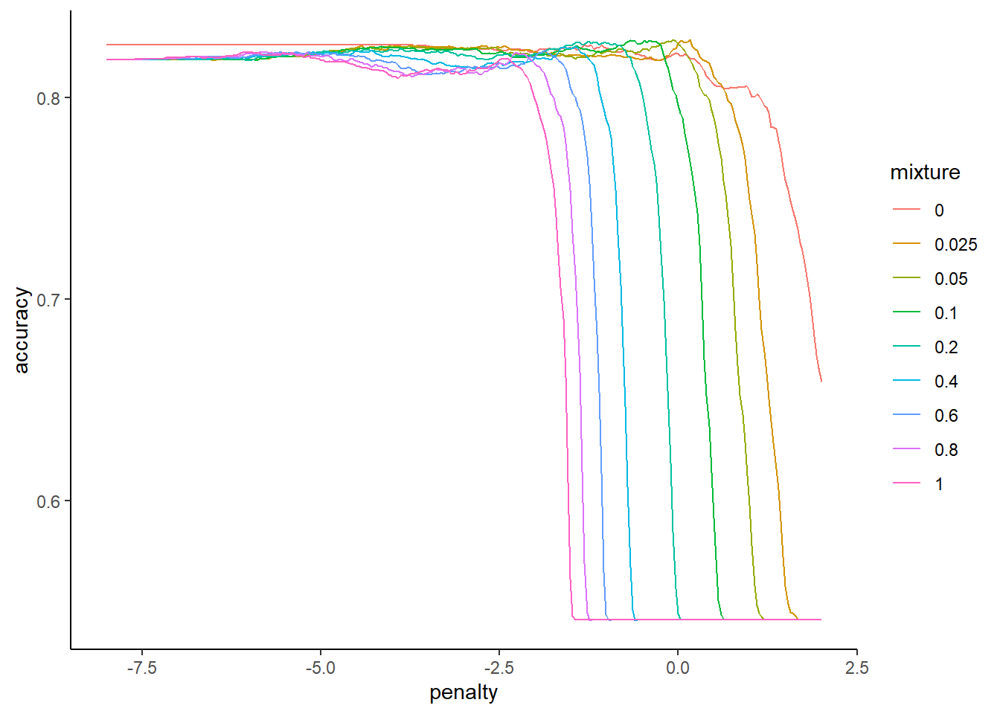
Here are the optimal hyperparameter values for the top 10 configurations
collect_metrics(fits_full) |>
arrange(desc(mean)) |>
print(n = 10)# A tibble: 2,700 × 8
penalty mixture .metric .estimator mean n std_err
<dbl> <dbl> <chr> <chr> <dbl> <int> <dbl>
1 0.279 0.1 accuracy binary 0.823 100 0.00277
2 0.270 0.1 accuracy binary 0.823 100 0.00277
3 0.261 0.1 accuracy binary 0.823 100 0.00273
4 0.403 0.1 accuracy binary 0.823 100 0.00287
5 0.476 0.1 accuracy binary 0.823 100 0.00288
6 0.252 0.1 accuracy binary 0.823 100 0.00272
7 0.509 0.1 accuracy binary 0.823 100 0.00281
8 0.364 0.1 accuracy binary 0.823 100 0.00280
9 0.228 0.1 accuracy binary 0.823 100 0.00278
10 0.389 0.1 accuracy binary 0.823 100 0.00283
.config
<chr>
1 Preprocessor1_Model1102
2 Preprocessor1_Model1101
3 Preprocessor1_Model1100
4 Preprocessor1_Model1113
5 Preprocessor1_Model1118
6 Preprocessor1_Model1099
7 Preprocessor1_Model1120
8 Preprocessor1_Model1110
9 Preprocessor1_Model1096
10 Preprocessor1_Model1112
# ℹ 2,690 more rowsAnd here is the best
(hp_best_full <- select_best(fits_full, n = 1))# A tibble: 1 × 3
penalty mixture .config
<dbl> <dbl> <chr>
1 0.279 0.1 Preprocessor1_Model1102Let’s fit this model to the full sample
rec_full_prep <- rec_full |>
prep(data_all)
feat_full <- rec_full_prep |>
bake(data_all)
fit_full <-
logistic_reg(penalty = hp_best_full$penalty,
mixture = hp_best_full$mixture) |>
set_engine("glmnet") |>
fit(disease ~ ., data = feat_full)Here are two ways to quantify model performance
- How does the optimal model configuration perform in the full dataset
accuracy_vec(feat_full$disease, predict(fit_full, feat_full)$.pred_class)[1] 0.8382838- And how does the optimal model configuration perform in held-out data
collect_metrics(fits_full) |>
arrange(desc(mean)) |>
print(n = 1)# A tibble: 2,700 × 8
penalty mixture .metric .estimator mean n std_err
<dbl> <dbl> <chr> <chr> <dbl> <int> <dbl>
1 0.279 0.1 accuracy binary 0.823 100 0.00277
.config
<chr>
1 Preprocessor1_Model1102
# ℹ 2,699 more rowsWe don’t care too much about objective performance in our situation. That is not our question.
- Same sample accuracy is comparable to what you would normally have if you weren’t in a machine learning context (except that we did use held-out data to determine the optimal hyperparameter values)
- Bootstrapped accuracy will remove bias due to overfitting the training data from our performance estimate because it is prediction in new data vs. same sample
- K-fold would be less biased than bootstrap if we cared about performance of the overall model
- Some optimization bias remains using either k-fold or bootstrapped accuracy to both select hyperparameters AND assess performance of best model
- If we really cared about overall performance, we should have held back a test set (or done nested CV)
Our focal question is NOT how well our full model does.
Instead, we want to know how much do scores from our exercise test improve prediction above baseline (with baseline being all other available characteristics). This is a relative comparison, not based on absolute performance.
To quantify this relative comparison, we need to use feature ablation to form a compact/reduced model that does not include the features associated with our exercise test
Here is a recipe to feature engineer features associated with this compact model
- We can start with the full recipe and add one more step to remove the features we want to evaluate
step_rm(contains("exer_")- All previous recipe steps remain the same
rec_compact <- rec_full |>
step_rm(contains("exer_"))We need to select/tune hyperparameters for this new model
It has different complexity than the full model so it might need different (less?) regularization for optimal performance
fits_compact <- cache_rds(
expr = {
logistic_reg(penalty = tune(),
mixture = tune()) |>
set_engine("glmnet") |>
tune_grid(preprocessor = rec_compact, # use recipe for compact model
resamples = splits_boot,
grid = grid_glmnet,
metrics = metric_set(accuracy))
},
rerun = rerun_setting,
dir = "cache/011/",
file = "fits_compact")Confirm that we found a good set of hyperparameters
fits_compact |>
plot_hyperparameters(hp1 = "penalty", hp2 = "mixture", metric = "accuracy",
log_hp1 = TRUE)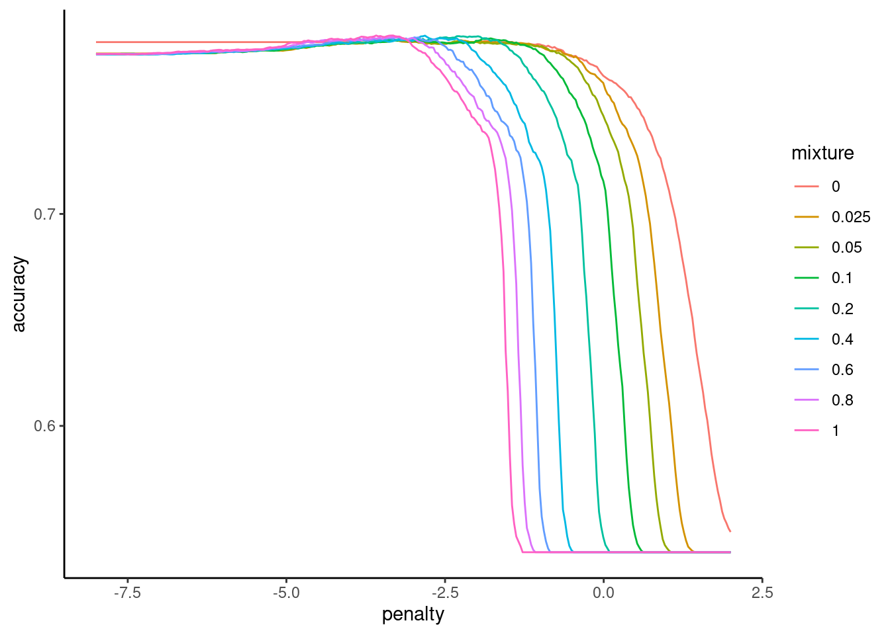
collect_metrics(fits_compact) |>
arrange(desc(mean)) |>
print(n = 10)# A tibble: 2,700 × 8
penalty mixture .metric .estimator mean n std_err
<dbl> <dbl> <chr> <chr> <dbl> <int> <dbl>
1 0.0362 1 accuracy binary 0.784 100 0.00318
2 0.0277 1 accuracy binary 0.784 100 0.00299
3 0.0350 1 accuracy binary 0.784 100 0.00318
4 0.0598 0.4 accuracy binary 0.784 100 0.00303
5 0.0339 1 accuracy binary 0.784 100 0.00310
6 0.0296 1 accuracy binary 0.784 100 0.00310
7 0.102 0.2 accuracy binary 0.784 100 0.00280
8 0.0988 0.2 accuracy binary 0.784 100 0.00279
9 0.0328 1 accuracy binary 0.784 100 0.00310
10 0.0579 0.4 accuracy binary 0.784 100 0.00299
.config
<chr>
1 Preprocessor1_Model2541
2 Preprocessor1_Model2533
3 Preprocessor1_Model2540
4 Preprocessor1_Model1656
5 Preprocessor1_Model2539
6 Preprocessor1_Model2535
7 Preprocessor1_Model1372
8 Preprocessor1_Model1371
9 Preprocessor1_Model2538
10 Preprocessor1_Model1655
# ℹ 2,690 more rows(hp_best_compact <- select_best(fits_compact, n = 1))# A tibble: 1 × 3
penalty mixture .config
<dbl> <dbl> <chr>
1 0.0362 1 Preprocessor1_Model2541Fit this compact model configuration to the full dataset
rec_compact_prep <- rec_compact |>
prep(data_all)
feat_compact <- rec_compact_prep |>
bake(data_all)
fit_compact <-
logistic_reg(penalty = hp_best_compact$penalty,
mixture = hp_best_compact$mixture) |>
set_engine("glmnet") |>
fit(disease ~ ., data = feat_compact)Here are accuracies for full and compact models in full sample where models were fit
accuracy_vec(feat_full$disease, predict(fit_full, feat_full)$.pred_class)[1] 0.8382838accuracy_vec(feat_compact$disease, predict(fit_compact, feat_compact)$.pred_class)[1] 0.7986799Here are accuracies for these two models assessed by bootstrap resampling
collect_metrics(fits_full) |>
arrange(desc(mean)) |>
slice(1)# A tibble: 1 × 8
penalty mixture .metric .estimator mean n std_err
<dbl> <dbl> <chr> <chr> <dbl> <int> <dbl>
1 0.279 0.1 accuracy binary 0.823 100 0.00277
.config
<chr>
1 Preprocessor1_Model1102collect_metrics(fits_compact) |>
arrange(desc(mean)) |>
slice(1)# A tibble: 1 × 8
penalty mixture .metric .estimator mean n std_err
<dbl> <dbl> <chr> <chr> <dbl> <int> <dbl>
1 0.0362 1 accuracy binary 0.784 100 0.00318
.config
<chr>
1 Preprocessor1_Model2541The compact model is less accurate but…..
- A simple descriptive comparison is not sufficient to justify the use of a costly test
- We need to be more confident that the test really improves screening in all possible held out samples from our dataset
- And by how much?
- How can we compare these two models?
11.7 Bayesian estimation for model comparisons
Benavoli et al. (2017) critique the many shortcomings wrt the frequentist approach, and I must admit, I am mostly convinced
- NHST does not provide the probabilities of the null and alternative hypotheses.
- That is what we want
- NHST gives us the probability of our data given the null
- NHST focuses on a point-wise comparison (no difference) that is almost never true.
- NHST yields no information about the null hypothesis (i.e., when we fail to reject)
- The inference depends on the sampling and testing intention (think about Bonferonni correction)
They suggest to use Bayesian parameter estimation as alternative to the t-test. Bayesian estimation has now been included in tidymodels in the tidyposterior package using the perf_mod() function.
You can (and should!) read more about this implementation of Bayesian Estimation in the associated vignette AND by reading the help materials on perf_mod()
Using this approach, we will estimate the posterior probability for values associated with specific parameters of interest. For our goals, we will care about estimates of three parameters
- The accuracy of the full model
- The accuracy of the compact model
- The difference in accuracies between these two models.
We want to determine the posterior probabilities associated with ranges of values for each of these three model performance parameters estimates. We can then use these posterior probability distributions to determine that probability that the accuracy of the full model is greater than the accuracy of the compact model.
In addition, we can also determine if the increased accuracy of the full model is meaningful (i.e., practically important).
To accomplish this latter goal, we will:
- Specify a Region of Practical Equivalence (a better alternative to the point-wise null in NHST)
- I will define classifiers whose performance are within +-1% as equivalent (not meaningfully different from each other) for our example
- Not worth the effort if my test doesn’t improve screening accuracy by at least this
- I will define classifiers whose performance are within +-1% as equivalent (not meaningfully different from each other) for our example
To estimate posterior probabilities for these three parameter estimates, we need to
- set prior probabilities for these parameter estimates. These should be broad/uninformative in most instances unless you have substantial prior information about credible values.
- Collect data on these estimates. This will be the same as before - the 100 estimates of accuracy using 10x10 fold CV for both the full and compact models.
Using these priors and these data, we can derive the posterior probabilities for our three performance estimates
Lets do this step by step. We will use the tidyposterior package. It in not included when we load tidymodels so we will load it now
library(tidyposterior)We need to make a dataframe of our 100 performance estimates for the full and compact models. Here is the code to do this using our previous resamples of our models
- Make dataframes of the accuracies from the full model and the compact model
accuracy_full <-
collect_metrics(cv_full, summarize = FALSE) |>
filter(.metric == "accuracy") |>
select(id, id2, full = .estimate) |>
print()# A tibble: 100 × 3
id id2 full
<chr> <chr> <dbl>
1 Repeat01 Fold01 0.871
2 Repeat01 Fold02 0.806
3 Repeat01 Fold03 0.871
4 Repeat01 Fold04 0.839
5 Repeat01 Fold05 0.933
6 Repeat01 Fold06 0.733
7 Repeat01 Fold07 0.9
8 Repeat01 Fold08 0.633
9 Repeat01 Fold09 0.867
10 Repeat01 Fold10 0.759
# ℹ 90 more rowsaccuracy_compact <-
collect_metrics(cv_compact, summarize = FALSE) |>
filter(.metric == "accuracy") |>
select(id, id2, compact = .estimate)Now we need to join these dataframes, matching on repeat and fold ids
resamples <- accuracy_full |>
full_join(accuracy_compact, by = c("id", "id2")) |>
print()# A tibble: 100 × 4
id id2 full compact
<chr> <chr> <dbl> <dbl>
1 Repeat01 Fold01 0.871 0.774
2 Repeat01 Fold02 0.806 0.774
3 Repeat01 Fold03 0.871 0.935
4 Repeat01 Fold04 0.839 0.677
5 Repeat01 Fold05 0.933 0.833
6 Repeat01 Fold06 0.733 0.8
7 Repeat01 Fold07 0.9 0.8
8 Repeat01 Fold08 0.633 0.633
9 Repeat01 Fold09 0.867 0.8
10 Repeat01 Fold10 0.759 0.759
# ℹ 90 more rowsNow we can use perf_mod() to derive the posterior probabilites for the accuracy of each of these two models
We need to specify a model with parameters in formula. Here we indicate that we have a multi-level model with repeated observation of accuracy across folds (id2) nested within repeats (id). This handles dependence associated with repeated observations of accuracy using similar models in k-fold cv.
We are interested in the intercept from this model listed in formula. The intercept value will represent the accuracy estimate for each model.
The default for
perf_mod()will be to constrain the variances of the intercept parameter estimate to be the same across models. This may be fine for some performance metrics (e.g., rmse) but for binary accuracy the variance is dependent on the mean. Therefore we allow these variances to be different usinghetero_var = TRUEIn some instances (e..g., rmse), we may want to allow the errors in our model to be something other than Gaussian (though this is often a reasonable assumption by the central limit theorem). You can change the
familyfor the errors if needed. See vignette and help onperf_mod(). Here, we use the default Gaussian distribution.This is an iterative process using a Markov chain Monte Carlo method (Hamilton Monte Carlo) so we need to set a seed (for reproducibility), and the number of iterations and chains (beyond the scope of this course to dive into this method). I provide default values for
iterandchainsbecause you may need to increase these in some instances for the method to converge on valid values. You can often address converge and other warnings by increasingiter,chainsoradapt_delta. You can read more about these warnings and issues here, here, here, and here to start.
Here is the code
set.seed(101)
pp <- cache_rds(
expr = {
perf_mod(resamples,
formula = statistic ~ model + (1 | id2/id),
# defaults but may require increases
iter = 2000, chains = 4,
# for more Gaussian distribution of accuracy
transform = tidyposterior::logit_trans,
hetero_var = TRUE, # for accuracy
family = gaussian, # default but could change depending on DV
# increase adapt_delta (e.g., .99, .999) to
# fix divergent transitions
adapt_delta = .99)
},
rerun = rerun_setting,
dir = "cache/011/",
file = "pp")In contrast to the NHST approach, we now have what we really want - posterior probabilities. Lets look at them
We can view the posterior probability distributions using an autoplot method for perf_mod objects.
These density plots tell how probable various values are for the accuracy of each model
The probabilities associated with any region of the curve is equal to the area under that curve for that region. This will tell you the probability associated with that range of values for accuracy.
You can easily see in this instance that the probable values for accuracy are higher generally for full model than the compact model
pp |> autoplot()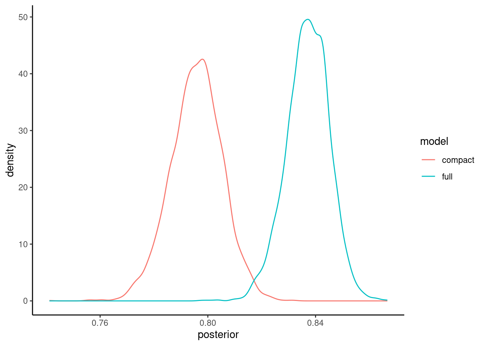
You will likely want to publish a figure showing these posterior probability distributions so you may want to fine tune the plots. Here are some code options using ggplot
Here is the same density plots using ggplot so you can now edit to adjust as you like
pp |>
tidy(seed = 123) |>
mutate(model = fct_inorder(model)) |>
ggplot() +
geom_density(aes(x = posterior, color = model) )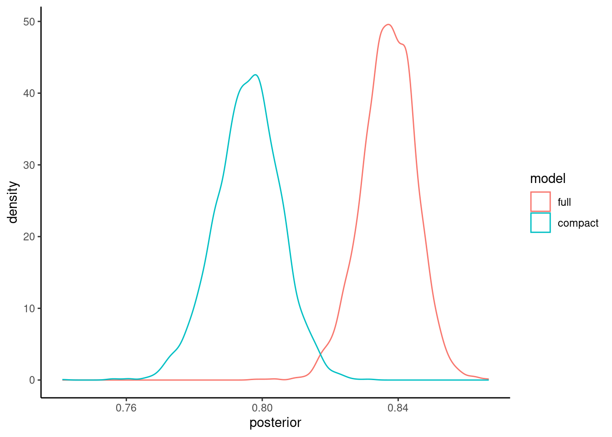
We are actually sampling from the posterior distribution so it might make more sense to display these as histograms rather than density plots
pp |>
tidy(seed = 123) |>
mutate(model = fct_inorder(model)) |>
ggplot() +
geom_histogram(aes(x = posterior, fill = model), color = "white", alpha = 0.4,
bins = 50, position = "identity") 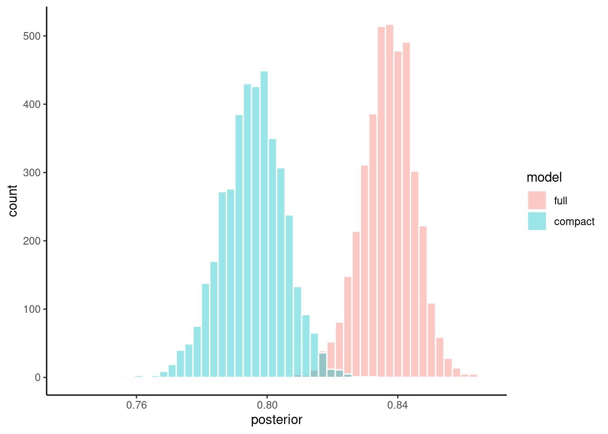
Or maybe you want to facet the histograms if the overlap is difficulty to view
pp |>
tidy(seed = 123) |>
mutate(model = fct_inorder(model)) |>
ggplot(aes(x = posterior)) +
geom_histogram(color = "white", fill = "blue", bins = 30) +
facet_wrap(~ model, ncol = 1)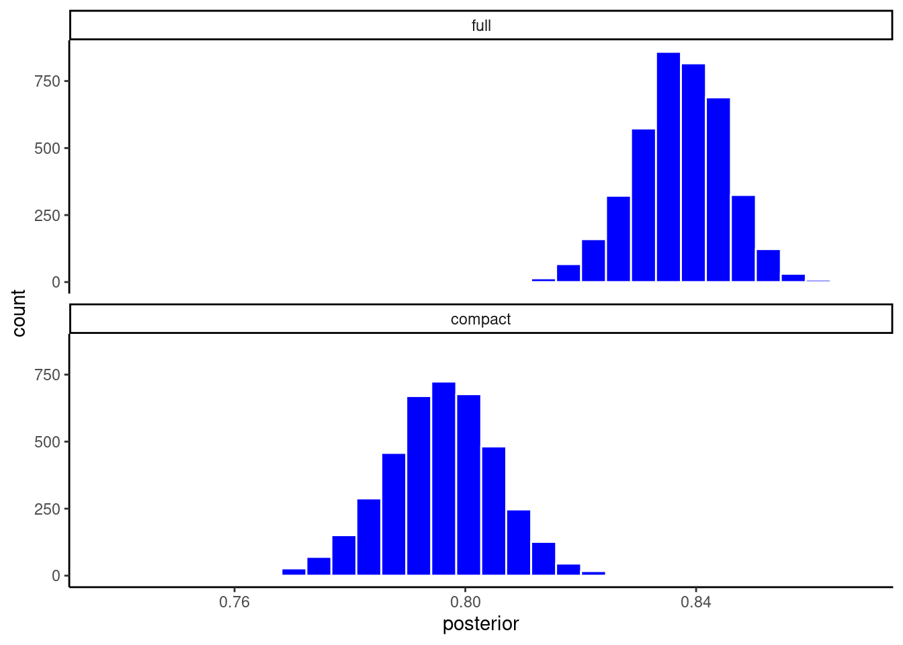
We can also calculate the 95% Higher Density Intervals (aka, 95% Credible Intervals; the Bayesian alternative to the 95% Confidence Intervals) for the accuracy of each model. This is the range of parameter estimate values that include 95% of the credible values. Kruschke described this in the assigned reading.
pp |> tidy(seed = 123) |> summary()# A tibble: 2 × 4
model mean lower upper
<chr> <dbl> <dbl> <dbl>
1 compact 0.796 0.780 0.811
2 full 0.837 0.824 0.850But what we really want is derive the posterior probability for the difference in accuracy between the two models. This will let us determine credible values for the magnitude of the difference and determine if this difference is meaningful.
We said early that we would define a ROPE of +-.01 around zero. The models are only meaningful different if their accuracies differ by at least 1%
Lets visualize the posterior probability distribution for the difference along with this ROPE using the built in autoplot function
pp |> contrast_models(seed = 4) |> autoplot(size = .01)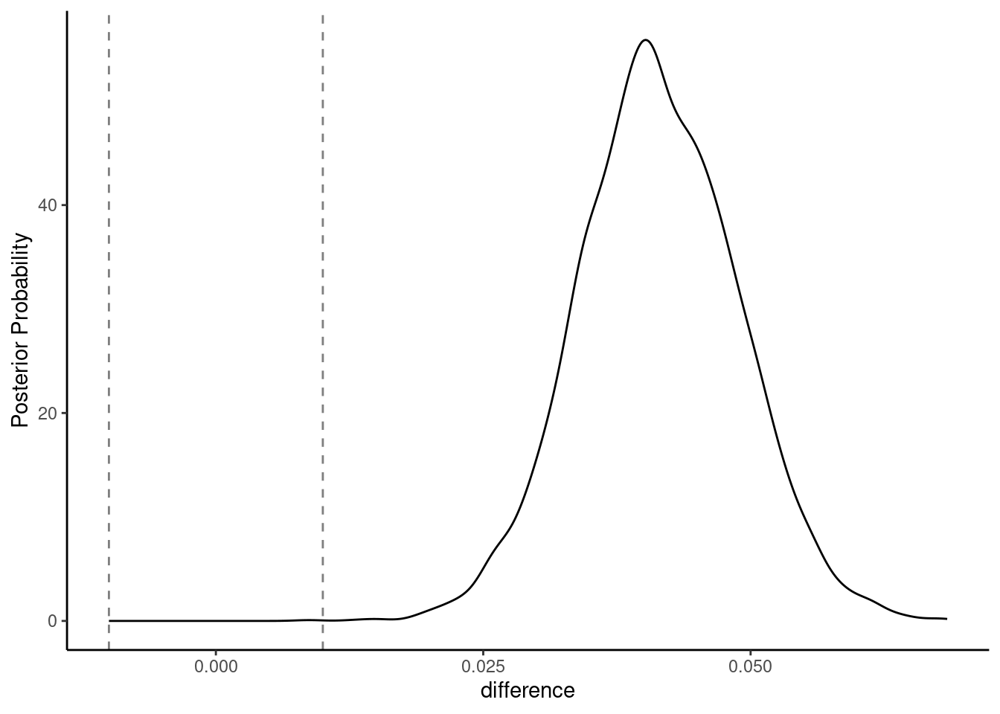
We could make more pretty plots directly in ggplot
pp |>
contrast_models(seed = 4) |>
ggplot() +
geom_density(aes(x = difference), color = "blue")+
geom_vline(aes(xintercept = -.01), linetype = "dashed") +
geom_vline(aes(xintercept = .01), linetype = "dashed")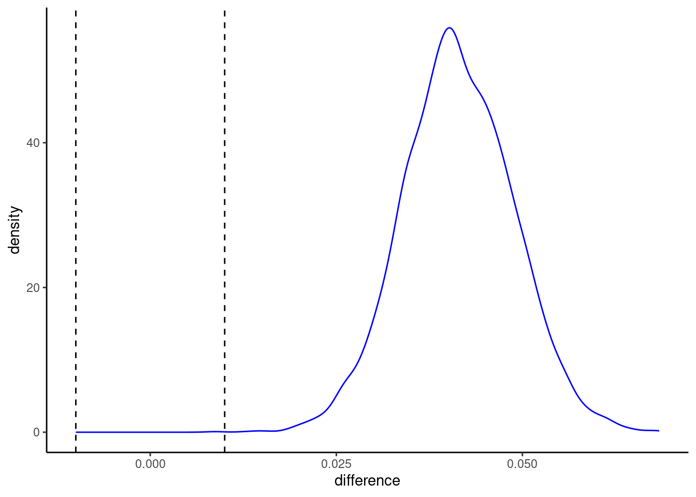
or my prefered histogram
pp |>
contrast_models(seed = 4) |>
ggplot(aes(x = difference)) +
geom_histogram(bins = 50, color = "white", fill = "blue")+
geom_vline(aes(xintercept = -.01), linetype = "dashed") +
geom_vline(aes(xintercept = .01), linetype = "dashed")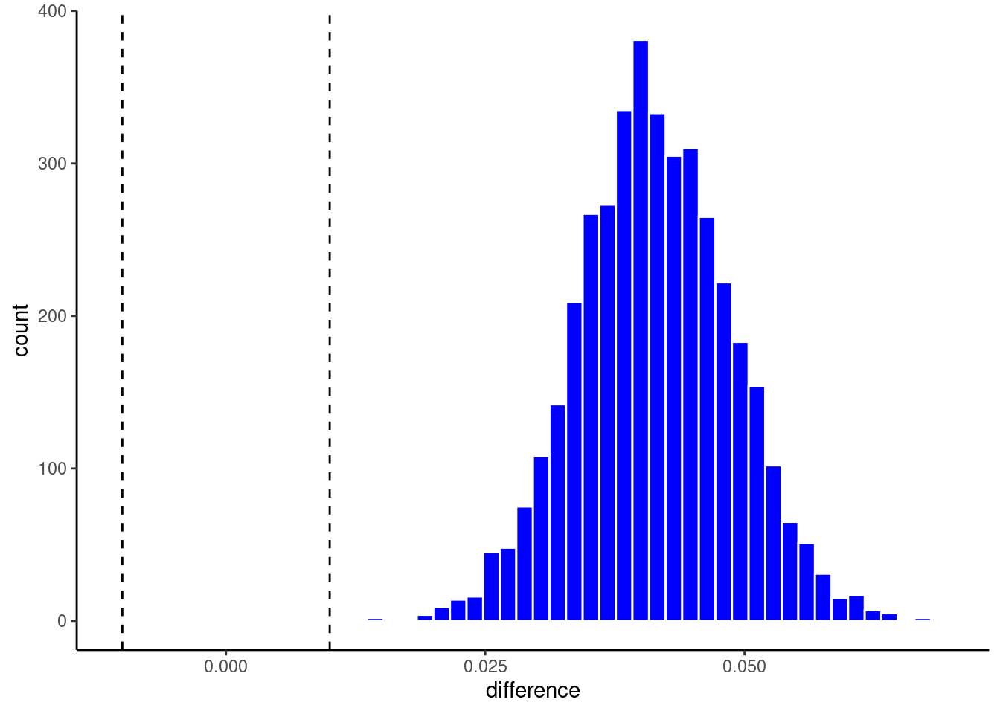
But perhaps most important, lets calculate the probability that the full model is more accurate than the compact model
- The mean increase in accuracy is 4.13%
- The 95% HDI is 2.94% - 5.35%
- The probability that the full model is meaningfully higher than the compact model (i.e., what proportion of the credible values are above the ROPE) is 1.
pp |> contrast_models(seed = 4) |> summary(size = .01)# A tibble: 1 × 9
contrast probability mean lower upper size pract_neg pract_equiv
<chr> <dbl> <dbl> <dbl> <dbl> <dbl> <dbl> <dbl>
1 full vs compact 1 0.0413 0.0294 0.0535 0.01 0 0.00025
pract_pos
<dbl>
1 1.00Alternatively, using the approach proposed by Kruschke (2018), you can conclude that the full model is meaningfully better than the compact model if the 95% HDI is fully above the ROPE. In this instance it is (.0294- .0535 is all above .01)
Finally, in some instances, you may not want to use the ROPE.
- Instead, you may simply want the posterior probability that the full model performs better than the compact model.
- This is probability is provided in the
probabilitycolumn of the table. - You can also set the size of the ROPE to 0 (though not necessary)
pp |> contrast_models(seed = 4) |> summary(size = 0)# A tibble: 1 × 9
contrast probability mean lower upper size pract_neg pract_equiv
<chr> <dbl> <dbl> <dbl> <dbl> <dbl> <dbl> <dbl>
1 full vs compact 1 0.0413 0.0294 0.0535 0 NA NA
pract_pos
<dbl>
1 NA11.8 Feature Importance
There as been increasing focus on improving the interpretability of machine learning models that we are using. There are numerous reasons to want to better understand why our models make the predictions that they do.
- The growing set of tools to interpret our models can help address our explanatory questions
- But they can also help us find errors in our models
- And they can detect possible bias (we will focus explicitly on algorithmic bias in later units)
Feature importance metrics are an important tool to better understand how our models work.
These metrics help us understand which features in our models contribute most to the predictions that the model makes.
For some models, interpretation and identification of important features is easy.
For example, if we standardize the features in a glm or glmnet model, we can interpret the absolute magnitude of the parameter estimates (i.e., the coefficients) as an index of the global (i.e., across all observations) importance of each feature.
- You can use the vip package to extract these model-specific feature importance metrics, but you can often just get them directly from the model as well
- More info on the use of vip package is available elsewhere
But for other models, we need different approaches.
There are many model-agnostic (i.e., can be used across all statistical algorithms) approaches to quantify the importance of a feature, but we will focus on two:
- Permutation Feature Importance
- Shapley Values
We follow recommendations from the tidymodels folks and use the DALEX and DALEXtra packages for model agnostic approaches to feature importance.
library(DALEX, exclude= "explain")Welcome to DALEX (version: 2.4.3).
Find examples and detailed introduction at: http://ema.drwhy.ai/
Additional features will be available after installation of: ggpubr.
Use 'install_dependencies()' to get all suggested dependencieslibrary(DALEXtra)Lets first get some coding issues accomplished before we dig into the details of the two feature importance metrics
To calculate these importance metrics, we will need access to the raw features and outcome. Lets get those again.
feat_full <- rec_full_prep |>
bake(data_all)We will need to have a df for the features (without the outcome) and a separate vector for the outcome
- features are easy. Just select out the outcome
x <- feat_full |> select(-disease)- For outcome, we need to select it first, convert to 0/1, and then pull the vector out of the dataframe
y <- feat_full |>
select(disease) |>
mutate(disease = if_else(disease == "yes", 1, 0)) |>
pull(disease)We also need a specific predictor function that will work with the DALEX package
We will write a custom function that “wraps” around our tidymodels predict() function
- It needs two parameters named
modelandnewdataand it needs to return a single column of probabilites for classification problems
predict_wrapper <- function(model, newdata) {
predict(model, newdata, type = "prob") |>
pull(.pred_yes)
}We will also need an explainer object based on our model and data. The explain_tidymodels() function in DALEXtra will create this object for us.
explain_full <- explain_tidymodels(fit_full, # our model object
data = x, # features without outcome
y = y, # outcome
# our predictor function
predict_function = predict_wrapper)Preparation of a new explainer is initiated
-> model label : model_fit ( default )
-> data : 303 rows 17 cols
-> data : tibble converted into a data.frame
-> target variable : 303 values
-> predict function : predict_function
-> predicted values : No value for predict function target column. ( default )
-> model_info : package parsnip , ver. 1.2.0 , task classification ( default )
-> predicted values : numerical, min = 0.1257285 , mean = 0.4587467 , max = 0.9100119
-> residual function : residual_function
-> residuals : numerical, min = 0 , mean = 0 , max = 0
A new explainer has been created! Finally, we need to define a custom function for our performance metric
- It needs to have two parameters:
observedandpredicted - We can create a wrapper function around
accuracy_vec()to fit these needs - For accuracy, we need to transform the predicted probabilites from our prediction function to class predictions
accuracy_wrapper <- function(observed, predicted) {
observed <- fct(if_else(observed == 1, "yes", "no"),
levels = c("yes", "no"))
predicted <- fct(if_else(predicted > .5, "yes", "no"), levels = c("yes", "no"))
accuracy_vec(observed, predicted)
}
We are now ready to calculate feature importance metrics
11.8.1 Permutation Feature Importance
The first model agnostic approach to calculating feature important is called Permutation Feature Importance
This approach is very straight forward. This approach says - if we want to calculate the importance of any specific feature, we can compare our performance metric using the original features to the performance metric we get if we permute (i.e., shuffle) the values for the feature we are evaluating.
By randomly shuffling the values for the feature, we break the relationship between that feature and the outcome so it no longer contributes to the predictions. If performance doesn’t change much, then that feature is not important. If performance goes down a lot, the feature is important.
- The function can provide
rawperformance (will give us performance for the non-permuted model and then performance for the model with each feature permuted, one at a time) differenceperformance measure, which is the difference between the permuted model and the non-permuted mode, separately for each featureratioperformance measure, which is (\(\frac{permuted}{original}\)), separately for each feature
To calculate accuracy after permuting each feature, we use model_parts(). We pass in
- our explainer object
- set the type (
rawin this example) - indicate our custom accuracy function
- set B to indicate number of permutations to perform
set.seed(123456)
imp_permute <- model_parts(explain_full,
type = "raw",
loss_function = accuracy_wrapper,
B = 100)Lets look at what this function returns
- the first row contains the accuracy for the full model (with no features permuted)
- last row is a baseline models (performance with all features permuted)
- Other row show the accuracy of the model when that specific feature is permuted
imp_permute variable mean_dropout_loss label
1 _full_model_ 0.8382838 model_fit
2 ca 0.7991419 model_fit
3 thal_reversabledefect 0.8045875 model_fit
4 exer_ang_yes 0.8177888 model_fit
5 exer_max_hr 0.8309241 model_fit
6 exer_st_depress 0.8314521 model_fit
7 cp_non_anginal 0.8325083 model_fit
8 exer_st_slope_flat 0.8333333 model_fit
9 sex_male 0.8335974 model_fit
10 thal_fixeddefect 0.8382508 model_fit
11 chol 0.8382838 model_fit
12 fbs_elevated 0.8382838 model_fit
13 rest_ecg_wave_abn 0.8382838 model_fit
14 exer_st_slope_downslope 0.8382838 model_fit
15 cp_atyp_ang 0.8386139 model_fit
16 rest_bp 0.8388119 model_fit
17 rest_ecg_ventric_hypertrophy 0.8401650 model_fit
18 age 0.8436964 model_fit
19 _baseline_ 0.5059406 model_fitWe can use the built in plot function from DALEX to display this
plot(imp_permute)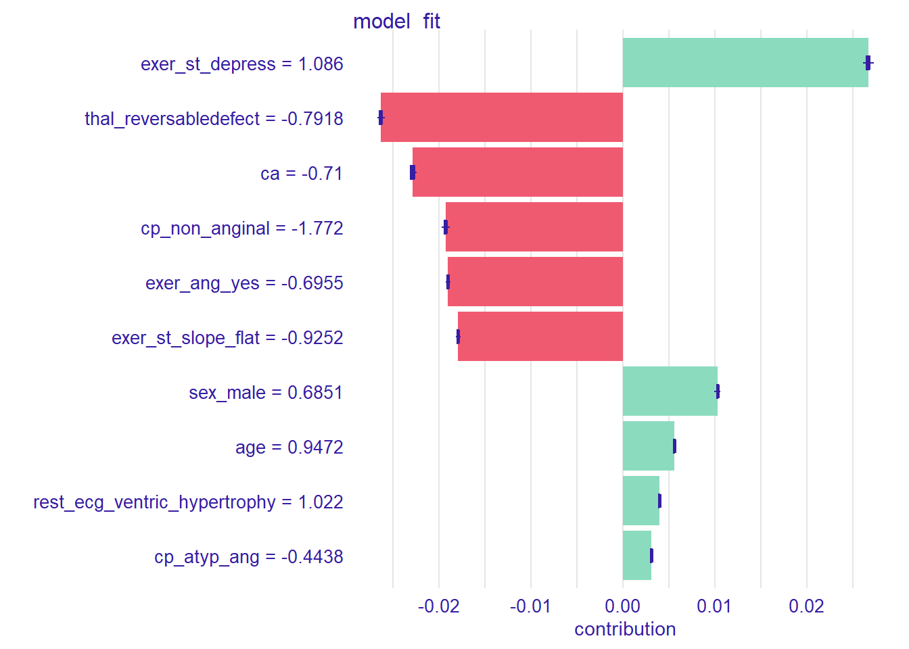
Or we can plot it directly. Here is an example from the tidymodels folks
full_model <- imp_permute |>
filter(variable == "_full_model_")
imp_permute |>
filter(variable != "_full_model_",
variable != "_baseline_") |>
mutate(variable = fct_reorder(variable, dropout_loss)) |>
ggplot(aes(dropout_loss, variable)) +
geom_vline(data = full_model, aes(xintercept = dropout_loss),
linewidth = 1.4, lty = 2, alpha = 0.7) +
geom_boxplot(fill = "#91CBD765", alpha = 0.4) +
theme(legend.position = "none") +
labs(x = "accuracy",
y = NULL, fill = NULL, color = NULL)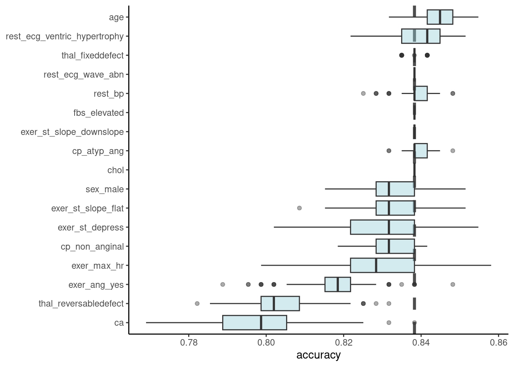
We can also permute a set of features to quantify the contribution of the full set
This is what we would want for our example, were we want to know the contribution of the four features that represent our exercise test.
To do this, we pass in a list of vectors of the groups. Here we provide just one group that we name exer_test
set.seed(123456)
imp_permute_group <- model_parts(explain_full,
type = "raw",
loss_function = accuracy_wrapper,
B = 100,
variable_groups = list(exer_test =
c("exer_ang_yes",
"exer_max_hr",
"exer_st_depress",
"exer_st_slope_downslope")))The results show that permuting these four features as a set drops accuracy from 0.838 to 0.738
imp_permute_group variable mean_dropout_loss label
1 _full_model_ 0.8382838 model_fit
2 exer_test 0.7378218 model_fit
3 _baseline_ 0.5119472 model_fit11.8.2 Shapley Values
Shapley values provide insight on the importance of any feature to the prediction for a single observation - often called local importance (vs. global importance as per the permutation feature importance measure above).
Shapley values can also be used to index global importance by averaging the local shapley values for a feature across all (or a random sample) of the observations.
Shapley values are derived from Coalition Game Theory.
They provide the average marginal contribution to prediction (for a single observation) of a feature value across all possible coalitions of features (combinations of sets of features from the null set to all other features).
Molnar (2023) provides a detailed account of the theory behind these values and how they are calculated which I will not reproduce here.
Lets calculate Shapley Values for the first observation in our dataset
Their features values were
obs_num <- 1
x1 <- x |>
slice(obs_num) |>
glimpse()Rows: 1
Columns: 17
$ age <dbl> 0.9471596
$ rest_bp <dbl> 0.756274
$ chol <dbl> -0.2644628
$ exer_max_hr <dbl> 0.01716893
$ exer_st_depress <dbl> 1.085542
$ ca <dbl> -0.7099569
$ sex_male <dbl> 0.6850692
$ cp_atyp_ang <dbl> -0.44382
$ cp_non_anginal <dbl> -1.772085
$ fbs_elevated <dbl> 2.390484
$ rest_ecg_wave_abn <dbl> -0.115472
$ rest_ecg_ventric_hypertrophy <dbl> 1.021685
$ exer_ang_yes <dbl> -0.69548
$ exer_st_slope_flat <dbl> -0.9252357
$ exer_st_slope_downslope <dbl> 3.658449
$ thal_fixeddefect <dbl> 3.972541
$ thal_reversabledefect <dbl> -0.7918057And we can get Shapley values using predict_parts()
sv <- predict_parts(explain_full,
new_observation = x1,
type = "shap",
B = 25)There is a built in plot function for shap values
For this first observation
- The values for each feature are listed in the left margin
- Bars to the right (e.g., sex_male) indicate that their feature value increases their probability of disease
- Bars to the left indicate that their feature value decreases their probability of disease
plot(sv)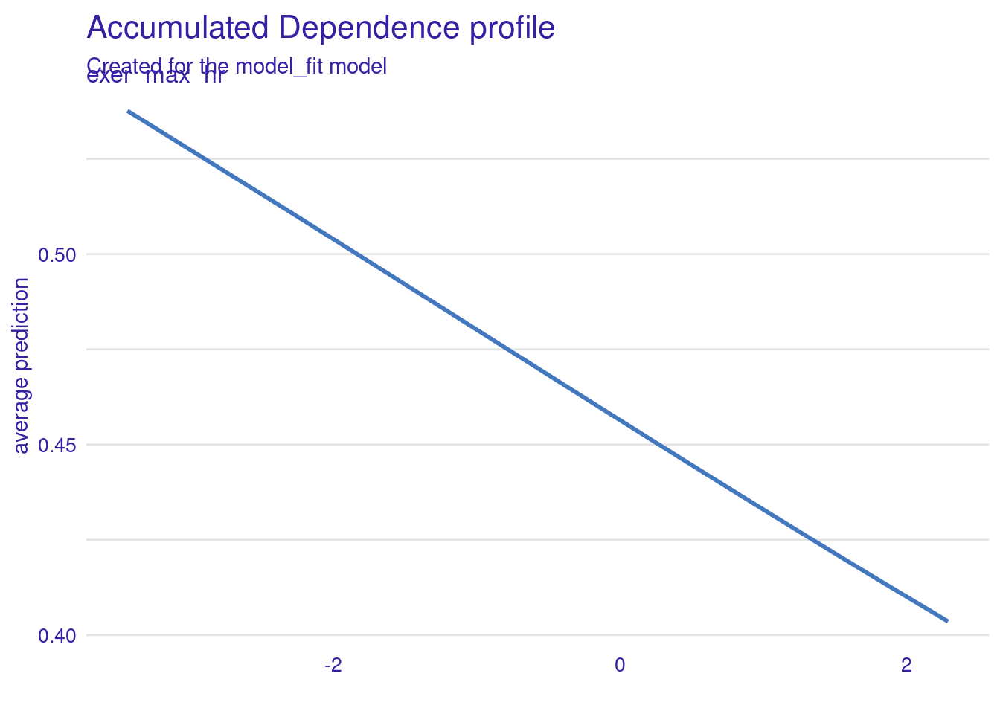
We can use these Shapley values for the local importance of the features for each observation to calculate the global importance of these features.
Features that have big absolute Shapley values on average across observation are more important. Let’s calculate this.
First we need a function to get shapley values for each observation (along with the feature values for a nicer plot)
get_shaps <- function(df1){
predict_parts(explain_full,
new_observation = df1,
type = "shap",
B = 25) |>
filter(B == 0) |>
select(variable_name, variable_value, contribution) |>
as_tibble()
}And then we can map this function over observations to get the Shapley values for each observation
local_shaps <- cache_rds(
expr = {
x |>
slice_sample(prop = 1/5) |> # take random sample to reduce computation time
mutate(id = row_number()) |>
nest(.by = id, .key = "dfs") |> # nest a dataframe for each observation
mutate(shaps = map(dfs, \(df1) get_shaps(df1))) |>
select(-dfs) |>
unnest(shaps)
},
rerun = rerun_setting,
dir = "cache/011",
file = "local_shaps")local_shaps |> head()# A tibble: 6 × 4
id variable_name variable_value contribution
<int> <chr> <chr> <dbl>
1 1 age 1.058 0.00704
2 1 ca -0.71 -0.0486
3 1 chol 1.281 0.0000232
4 1 cp_atyp_ang -0.4438 0.00286
5 1 cp_non_anginal 0.5624 0.0107
6 1 exer_ang_yes -0.6955 -0.0362 Programming note: This code demonstrates another nice R programming technique using nest() and unnest() in combination with map() and list-columns. For more info, see this chapter in Wickham, Çetinkaya-Rundel, and Grolemund (2023) and the vignette on nesting (vignette("nest")).
Now that we have Shapley values for all observations, we can calculate the mean absolute Shapley value across observations and plot it.
- Across all observations,
cacontributes to an average change of .06 from the mean predicted probability of disease. - One of the features from our exercise test,
exer_ang_yes, contributes about .05 change from mean predicted probability of disease. - The other
exer_features are not far behind.
local_shaps |>
mutate(contribution = abs(contribution)) |>
group_by(variable_name) |>
summarize(mean_shap = mean(contribution)) |>
arrange(desc(mean_shap)) |>
mutate(variable_name = factor(variable_name),
variable_name = fct_reorder(variable_name, mean_shap)) |>
ggplot(aes(x = variable_name, y = mean_shap)) +
geom_point() +
coord_flip()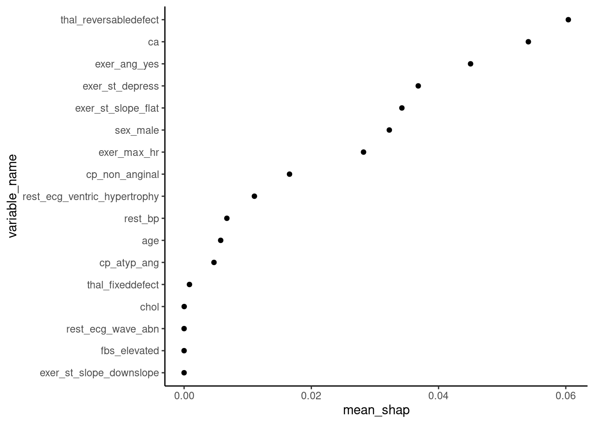
For a more advanced plot (a sina plot; not displayed here) we could superimpose the individual local Shapley values and color them based on the feature score.
This would allow us to show the direction of the relationship between the Shapley values and feature values.
See FIGURE 9.26 in Molnar (2023) for an example of this type of plot.
Shapley values are attractive relative to other approaches because
- They have a solid theoretical basis
- Sound statistical properties (Efficiency, Symmetry, Dummy and Additivity - see Molnar (2023))
- Can provided a unified perspective across both local and global importance.
However, they can be VERY time consuming to calculate (particularly if you want to use them for global importance such that you need them for all/many observations).
There are computational shortcuts available but even those can be very time consuming in some instances (though XGBoost has a very fast implementation that we use regularly).
(Note that for decision tree based algorithms SHAP provides a more computationally efficient way to estimate Shapley values - see section 9.6 in Molnar (2023) for more detail.)
11.9 Visual Approaches to Understand our Models
We can also learn about how our features are used to make predictions in our models using visual approaches.
There are two key plots that we can use:
- Partial Dependence (PD) Plots
- Accumulated Local Effects (ALE) Plots
11.9.1 Partial Dependence (PD) Plots
The Partial dependence (PD) plot displays the marginal effect of a target feature or combination of features on the predictions from a model.
In essence, the prediction for any value of a target feature is the average prediction across cases if we set all cases to have that value for the target feature but their observed values for all other features.
We can use PD plots to understand whether the relationship between a target feature and the outcome is linear, monotonic, or more complex. It may also help us visualize and understand if interactions between features exist (if we make a PD plot for two target features).
The PD Plot is attractive because
- it is easy to understand (prediction for each feature value averaged across observed values for all other features)
- if the target feature is uncorrelated with all other features, its interpretation is clear, it is how the average prediction changes as the target features changes values.
- it is computationally easy to implement
- it has a causal (for the model, not the real world!) interpretation. This is what happens to the predciction if we manipulate the values of the target feature but hold all other features constant at their observed values.
However:
- The assumption that the target feature is not correlated with the other features is likely unrealistic in many/most instances
- This plot (but also other plot methods) are limited to 1 - 2 features in combination.
- It may hide effects when interactions exist
11.9.2 Accumulated Local Effects (ALE) Plots
If the features are correlated, the partial dependence plot should not be used because the plots will otherwise be based on combinations of the target feature and other features that may never occur (given the feature correlations).
Molnar describes how this problem of correlated features and unrealistic combinations of features can be solved by M-Plots that plot the average effect of a target feature using the conditional values on other features (i.e., only using realistic values for the other features based on their correlations with the target feature). Unfortunately, this too is sub-optimal because it will confound the effect of the target feature with the effects of the other features that are correlated with it.
Accumulated Local Effects (ALE) plots also use conditional values of other features to solve the correlated features problem. However, ALE plots solve the confounding problem by calculating differences in predictions associated with changes in the target feature rather than average predictions for each value of that target feature. These differences hold the other features values (mostly) constant to remove their effects.
ALE plots are the preferred plot in situations where you expect your target feature to be correlated with other features (which is likely most situations.)
We will use the DALEX package again to make these PD and ALE plots.
It will require the explainer object we created earlier for feature importance
Otherwise, the code is very straight-forward. Here we get the predicted values for an ALE plot to examine the effect of one of the features from our exercise test (exer_max_hr) on disease probabilities.
If we wanted a PD plot, we could simply substitute partial for accumulated
ale <- model_profile(explainer = explain_full,
type = "accumulated",
variables = "exer_max_hr",
N = NULL) # to use full sample (default is 100)There is a default plot function for these plot object (or you could use the data in the object to make your own ggplot)
The probability of disease decreases as max hr increases in the exercise test
ale |> plot()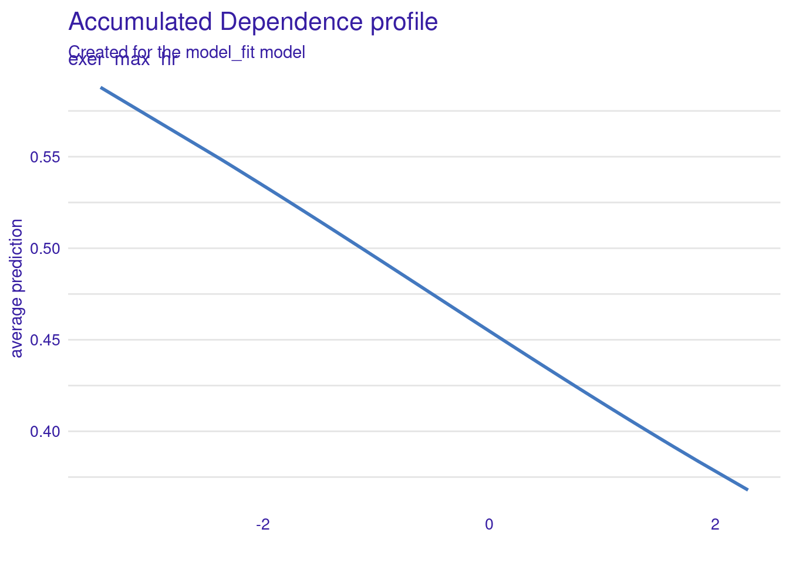
11.10 Summary and Closing Thoughts
When pursuing purely explanatory goals with machine learning methods, we can:
Use resampling with the full dataset to determine appropriate model configuration
- Best statistical algorithm
- Which covariates
- Other “researcher degrees of freedom” such as handling of outliers, transformations of predictors
Use permutation test for a test that is analogous to the linear model test of R2
- Useful if we have a question about our full set of features
Use model comparisons (Frequentist or Bayesian) in combination with feature ablation to test effect of feature or set of features
We can use feature importance measures (permutation or Shapley) to understand the contributions that various features make to prediction for an observation (local) or across observations (global)
We can explore the shape (and magnitude?) of relationships using PD and ALE plots
We can explore the strength of interactions among our features
11.11 Discussion
11.11.1 Annoucements
- Review conceptual exam
- RMD files
11.11.2 Questions
11.11.2.1 ALE and PD plots
What is the difference between PD plot and ALE plot? And when should we use they for specific?
I am still confused about partial dependence plots and ale plots and when we want to use them.
I am confused about the question in the unit 9 quiz. when you have moderate or stronger correlations among your features, ALE and M-plots both could be used to visualize the effects of your features on the outcome. Based on the web book, we learned that M-plot is sub-optimal, which means we better use ALE right? and M-plots are not recommended.
11.11.2.2 Prediction vs. explanation
I think it would be useful to talk about how to use these same models that we have been building for explanatory purposes rather than predictive ones. Is that when interpretability matters most? I feel like some of the reading on interpretability contradicted what we talked about earlier on in the semester about how in a predictive model, interpretability doesn’t necessarily matter.
It seems that there is a trade-off regarding interpretability. How to make a good decision about the degree of the interpretability so that the system will be not manipulated when there is a misalignment/mismatch between the goals of the creator and the user?
If I understood correctly, interpretability/explainability is about the model predictions, while comprehensibility is about users’ understanding of the explanations. Transparency is about the algorithms. These concepts are kind of confusing. It would be nice if you could help us distinguish them more conceptually.
11.11.2.3 Permutation test
Mathematically, is there not a way to estimate what the accuracy would be even if there were not a relationship between predictors and outcome? Wouldn’t the estimated accuracy simply be the proportion of observations in the dominant class? I guess I do not see why the permutation test is necessary, then.
shuffling a feature’s values removes the relationship between that feature and the outcome, and I think the prediction error of the model increases.
11.11.2.4 Bayesian estimation
In case of unit 9, K-fold is preferred, the question goes how to balance the choice between K-fold and bootstrap?
What’s are prior posterior probabilities?
HDI and ROPE.
I’m still a little confused about HDI values. I understand that when HDI values are above the ROPE it tells us that our full model is meaningfully better than our compact model, but I don’t understand what the HDI values themselves represent or how they are calculated.
If there’s no difference between our model’s performance and the performance of a similar model in a permuted dataset, (how) can we distinguish whether that’s because there’s no signal in our predictors or because our model failed to exploit that signal?
I am especially confused about Bayesian estimation for model comparisons. Does convergence mean that the best parameters for the model have been found, and why do we do this specifically with Bayesian estimation
11.11.2.5 Shapley values
I think I just need a deep dive into shapely values
What are shapley values and how do we interpret them?
Revisiting Shapley values
Since Shapley values average across all possible coalitions, do they implicitly take into account interactions?
11.11.2.6 Interations and H-Statistic
The IML book says “The H-statistic has a meaningful interpretation: The interaction is defined as the share of variance that is explained by the interaction.” But one thing I’m confused about: what variance are we talking about here (i.e., the share of variance in what)?
In particular, I’m confused about how to interpret the H-statistic in the context of looking at all 2-way interactions with a specific feature, since sometimes those interaction strengths with that feature seem to sum to more than the overall interaction strength for that feature (e.g., looking at figures 8.20 and 8.21 in the IML book), and I don’t know how that would be.
After detecting interactions, what should we do as the next step? Is that possible to detect three-way interactions?
Can we go over more details about detecting interactions?
could you explain more about Friedman’s H-statistic
Bouckaert, Remco R. 2003. “Choosing Between Two Learning Algorithms Based on Calibrated Tests.” In Proceedings of the Twentieth International Conference on International Conference on Machine Learning, 51–58. ICML’03. Washington, DC, USA: AAAI Press.
Kruschke, John K. 2018. “Rejecting or Accepting Parameter Values in Bayesian Estimation.” Advances in Methods and Practices in Psychological Science 1: 270–80.
Molnar, Christoph. 2023. Intepretable Machine Learning: A Guide for Makiong Black Box MOdels Explainable. 2nd ed. https://christophm.github.io/interpretable-ml-book/.
Nadeau, Claude, and Yoshua Bengio. 2003. “Inference for the Generalization Error.” Machine Learning 52 (3): 239–81. https://doi.org/10.1023/A:1024068626366.
Wickham, Hadley, Çetinkaya-Rundel Mine, and Garrett Grolemund. 2023. R for Data Science: Visualize, Model, Transform, and Import Data. 2nd ed. https://r4ds.hadley.nz/.